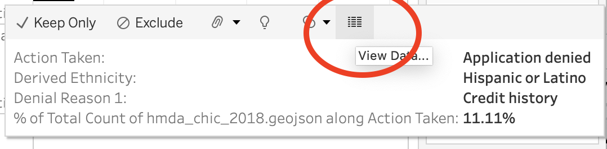
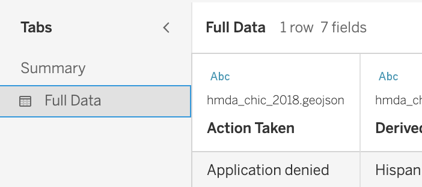

Housing Justice
Responding to claims centered around meritocracy
Overview
In this lab, you will work through a series of exercises to visualize data regarding lending practices in Chicago, IL. Through today’s exercises, you will be introduced to polygon mapping in Tableau, along with strategies for creatively filtering data.
The Counter-Claim
As you read this week, banking organizations across the U.S. have countered claims that high loan denial rates amongst certain sub-populations can serve as evidence of discriminatory lending practices. They note that just looking at denial rates across race and ethnicity fails to take into consideration the reasons for denial - low incomes, high debt, poor credit histories. They argue that it is not bias to reject a loan for these reasons, even if it means rejecting individuals in certain racial and ethnic groups more than others. Their arguments focus on the merit of certain of loan applicants. Doing so ignores the histories of structural segregation that create impact who has access to wealth and credit.
Refuting counter-claims based in meritocracy requires that we produce evidence of the legacies of structural inequity that shape people’s current access to resources and opportunities. Overall, this lab will demonstrate what we can see when we look beyond in-the-moment decision-making. It will also show how meritocracy arguments can fail when we zoom in on certain data points.
The Dataset
In order to ensure that financial institutions are in compliance with fair lending laws in the U.S. (such as the Equal Credit Opportunity Act and the Fair Housing Act), lenders are required to collect and report data on an applicant’s ethnicity, race, gender, and income when they apply for a mortgage. With the passing of the Home Mortgage Disclosure Act (HMDA) in 1975, financial institutions were at first required to report demographic information about applicants, aggregated by census tracts. The reporting of this data was largely prompted by concerns that banks were contributing to the decline of certain urban neighborhoods by denying qualified borrowers loans, as well as concerns that financial institutions were engaging in discriminatory lending practices and contributing to the redlining of neighborhoods. Growing concerns about individual-level discrimination in lending prompted the passing of the Financial Institutions Reform, Recovery, and Enforcement Act (FIRREA) of 1989, which required institutions to report demographic data (or what they call “government monitoring information”) for every applicant regardless of whether the loan was approved or denied.
Today, we’re going to analyze 2018 HMDA representing Cook County, Illinois. We’re also going to work a bit with historic redlining maps of Chicago, published by the University of Richmond’s Digital Scholarship Lab.
Robert K. Nelson, LaDale Winling, Richard Marciano, Nathan Connolly, et al., “Mapping Inequality,” American Panorama, ed. Robert K. Nelson and Edward L. Ayers, accessed September 3, 2023, https://dsl.richmond.edu/panorama/redlining/
Instructions
Part 1: What’s in this dataset?
Note that every row in the HMDA dataset is one loan application. Navigate the data documentation here in order to see what gets reported in this dataset. Jot down terms that you are unfamiliar with. We will discuss them as a class.
Part 2: Explore the Mapping Inequality website
Explore historic redlining maps of Chicago (published by the University of Richmond’s Digital Scholarship Lab) by navigating here. Click on different neighborhoods on the map. What do the different colors on the map mean? What were some of the reasons different neighborhoods received different ratings?
Part 3: Download the datasets
Today, both of the datasets that we are going to be working contain polygon geometry. What do I mean by this? Check out the map below.

Notice how every state is a polygon? Similarly, the datasets we will be using today are designed to allow us to map polygons of different neighborhoods and census tracts in Chicago.
Part 3: Analyzing the data
Open Tableau, and create a new workbook called hmda_chicago. Click “Connect to Data” and the ILChicago1940.zip file as a Spatial File. In the top menu, click Data > New Data Source. Add hmda_chic_2018.geojson as a Spatial File.
Note that to save time, I’ve already cleaned this data for you. Specifically, I swapped out all of the numeric codes in the dataset with their qualitative labels. I’ve also added geometries of the census tracts associated with each row. However, there is one data type that we will need to fix before we open our first worksheet.
In the Data Source tab, scroll to the column Combined Loan to Value Ratio and convert it to a Number (Decimal).
Question
Create a worksheet in Tableau called “HOLC Maps of Chicago, IL - 1940”. Give the tab a descriptive name. Drag the Geometry pill onto the Tableau canvas. This will create a map of Chicago. Now drag the HOLC Grade to the Color field. Edit the map colors such that A is green, B is blue, C is yellow, and D is red. Finally, add the HOLC ID to the Detail field.
What do you notice about the geographies of segregation across the city?
The map that you just created used a qualitative color palette, filling polygons according to the values in a categorical variable.
We can also color polygons according to a numeric variable by mapping the values in that variable to a shade of a color along a gradient. When we do so, we create what are called chloropleth maps.
Question
Create a worksheet in Tableau called “Minority Population Percentage per Tract, Cook County, IL, 2018”. Give the tab a descriptive name. Drag the Geometry pill onto the Tableau canvas. This will create a map of Cook County. Drag the Census Tract pill to the Detail field in order to identify each census tract mapped. Now drag Tract Minority Population Percentage onto the Color field.
Note that each row in this dataset is a loan application, not a census tract. In 2018, there were many loan applications submitted in each tract. Because I’m mapping census tracts, by default, Tableau takes the sum of Tract Minority Population Percentage across every loan application in each tract. This doesn’t make sense, right? …because the value for Tract Minority Population Percentage is specific to the tract not the loan. Every loan application in that tract is going to have the same value listed in Tract Minority Population Percentage. I don’t need to sum across all applications; I just want to show the value for that tract. To do that, I’m going to convert SUM(Tract Minority Population Percentage) to an attribute by clicking on its pill in the Color field. Rename the legend title to something descriptive.
What do you notice about the geographies of minority populations across the city?
Question
Create a worksheet in Tableau called “MSA Income Percentage per Tract, Cook County, IL, 2018”. Give the tab a descriptive name. Repeat the steps above but using the Tract to Msa Income Percentage pill.
What do you notice about the geographies of income inequality across the city?
Question
Create a worksheet in Tableau called “Amounts of Loans Originated per Tract, Cook County, IL, 2018”. Give the tab a descriptive name. Repeat the steps above but using the Loan Amount pill. This time, leave the aggregation as a SUM, since we want a total of the loans originated in each census tract. Finally, drag the Action Taken pill to the filter panel, and filter the plot to only include loans that were originated.
What do you notice about the geographies of loan resources originated across the city?
When we dragged Action Taken to the filters panel, we created a global filter on the data. This means that we filtered the original Data Source such that only originated loans would be considered in our analysis/visualizations. Recall that this is different from creating a local filter on data. When applying local filters, the data remains the same in the original Data Source, but we hide certain variables from view in our visualizations.
Question
Create a worksheet in Tableau called “Loan Application Denial Percentage per Tract, Cook County, IL, 2018”. Give the tab a descriptive name. Drag the Geometry pill onto the Tableau canvas. This will create a map of Cook County. Drag the Census Tract pill to the Detail field in order to identify each census tract mapped. Now drag hmda_chic_2018.geojson (Count) onto the Color field. This creates a map indicating how many loan applications were submitted in each census tract in Cook County, IL.
We are specifically interested in where applications were denied. Drag the Action Taken pill onto the Rows field. Note how this creates 8 rows of maps - one for each action listed in that variable. Right click on each Action listed on the Tableau canvas except for “Application denied” and click “Hide”. Note that this is a local filter, not a global filter. It filters the data on our screen, but not the data source.
Right now we have a map that shows us the total number of applications denied in each tract. …but we can’t tell if a tract having numerous denials is a result of a high denial rate or just more applications being submitted in the tract. What if we would like to see denials as a percentage of the all the applications submitted in each tract? Click on the hmda_chic_2018.geojson (Count) pill you mapped onto the Color field, and add a Quick Table Calculation > Percent of Total. We’re trying to see the percentage of denials out of all possible actions taken, so you’ll want to click on the pill again and select “Compute Using…” > Action Taken.
What do you notice about the geographies of denial rates across the city?
Taken together, what story can you tell about legacies of segregation in Chicago? What additional data would you need to fill in gaps in those stories?
These maps provide us with information about lending practices on a census tract level, but what if I wanted to examine potential discriminatory lending practices on an individual level?
Question
Create a worksheet in Tableau called “Loan Application Actions by Race, Cook County, IL, 2018”. Give the tab a descriptive name. Drag the Action Taken field onto the Rows field, followed by the Derived Race field. Drag the hmda_chic_2018.geojson (Count) field onto the Columns field. Convert the count to a percentage of total, such that the percentage we see is a percentage of a specific action out of all possible actions (i.e. denial rate, origination rate, etc. )
What do you notice about the differences in denial rates and origination rates across racial groups?
Question
Create a worksheet in Tableau called “Loan Application Actions by Ethnicity, Cook County, IL, 2018”. Give the tab a descriptive name. Repeat the steps above, but for Derived Ethnicity.
What do you notice about the differences in denial rates and origination rates across ethnic groups?
We know income and debt to be unequally distributed along racial and ethnic lines due to histories of structural inequality. The redlining maps we recreated at the start of this lab are just one form of structural inequality that reshaped racial wealth in the 1900s. …but for a moment, for rhetorical purposes, let’s set this knowledge aside. Assuming that loan originators are just trying to play by the rules, we could assume that two individuals - one white and one black - with similar incomes, and similar debt would see similar outcomes when applying for a similar loan in the same year. Let’s test that out in our data.
Question
On the worksheet called “Loan Application Actions by Ethnicity, Cook County, IL, 2018”, add filters for Income, Debt to Income Ratio, Combined Loan to Value Ratio. Click on each of these filters in the Filters Panel, and select “Show Filter” in order to show an interactive filter on the worksheet. Finally, drag Denial Reason 1 to the Tooltip field.
Filter the data such that applications with similar loan to value ratios from individuals with similar incomes and similar debt-to-income ratios appear in the plot.
What changes in regards to denial rates across ethnic groups do you notice?
As you filter, click on the bars in the graph to view the underlying full data.


How did the denial reasons differ across racial and ethnic groups?
Click on each of your interactive filters and select Apply to Worksheets > Selected Worksheets. Add each filter to “Loan Application Actions by Race, Cook County, IL, 2018”. Experiment with the filters on this second worksheet and review the underlying data.
What changes in regards to denial rates across racial groups do you notice?
Part 5: Reflection
Note that this data does not include the credit scores of applicants, so we can’t assess the role of credit history in decision-making. How might we summarize what we just learned into a factual claim? For one, we can see that historically red-lined neighborhoods in Chicago continue to be segregated and continue to have higher loan denial rates. We can also see that financial resources tend to be concentrated in areas of the city that have historically been prioritized for mortgage lending. Further, we can see that, even when factoring in income, debt, and loan amounts, denial rates are unevenly distributed across racial and ethnic groups in Chicago. Can we go so far as to claim that this data provides evidence of discriminatory lending? If not, what further data would we need to assess this? …and how should we respond to arguments from the lending industry that this data cannot show discrimination?